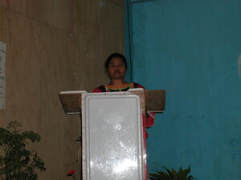

sabeka 
/sabɔka/
Var. sabbeka
Var. saa
num.
“one”
1.
num.
one (counting)
Gramm. Sometimes used as the counting form, although saa is more common.
Eng. 01; one (counting)
OCM: Numeration (802)
DDP: Cardinal numbers (8.1.1.1)
Online dict status: -
Usage level: B
adj.
(sabeka) one (adjective)
Langun ne baley te me Matigsalug diyè te me katalunan pad sabeka rè ka sinabeng.
All of the houses of Matigsalug people there in remote areas have just one room.
Kada sabeka ne gelun due tahu.
Each/every gallon container is full / All the gallon containers are full.
Eng. one (adjective); single
Tag. isá
Ceb. usa
Ilo.: máysa
OCM: Numeration (802)
DDP: Cardinal numbers (8.1.1.1)
Online dict status: -
Usage level: B
pron.
one
Sikandan ka sabeka ne migbulig keddì te migderalu a.
They were the ones who helped me when I was sick.
Eng. one (pronoun)
OCM: Grammar (193)
DDP: Indefinite pronouns (9.2.3.2)
Online dict status: -
Usage level: M
num.
(insabeka, iN-) one
Insabeka ku rè te egpurut ka bulpin diyè te lamisa.
I'm just picking up one ballpen from the table.
Gramm. This affix indicates limitation of the number
Eng. one; just one; limit
OCM: Numeration (802)
DDP: Cardinal numbers (8.1.1.1)
Online dict status: -
Usage level: R
2.
adv.
(kasabeka, kA-) once
Kasabeka e rè iya nakahati te patiyukan ne nareha ad e su amana ne bes ne masakit.
I was bitten by bees once and I don't want to be bitten again for it is so painful.
Eng. once; one time
OCM: Numeration (802)
DDP: Number of times (8.1.1.3)
Online dict status: -
Usage level: F
3.
adv.
(tigsabeka, tig-) in ones or one each
Tigsabeka ki te atelug te maya ne nakita ta.
Each of us will have one of the eggs which we've found.
Eng. ones; one each
OCM: Numeration (802)
DDP: Numbered group (8.1.1.5)
Online dict status: -
Usage level: M
4.
adj.
(salimbeka, -liN-) seldom; only a few
Salimbeka naan dè ka uran te peggipanew ran gabii.
It was just spitting (with rain) yesterday when they left.
Salimbeka rè ka etew ne due tumanud.
Very seldom does someone have a leading spirit.
Eng. uncommon; unusual; classic; casual; only a few; one at a time
OCM: Numeration (802)
DDP: One (8.1.1.1.1)
Online dict status: -
Usage level: R
adj.
(salsalimbeka, manalimbeka, rdpCVC-liN-) only a few, or one or two here and there
Manalimbeka ka salulu te aheley ku.
Only a few are starting to bear grain.
Salsallimbeka ka rè ka nanubu te ahelayan ku.
Very few of the corn seeds which I planted have grown.
Salsallimbeka ka nanambung te miting.
Very few attended the meeting.
Gramm. can also be used as a pronoun as in the third example
Eng. only one or two here and there; one or two; a couple; very few; only a few; some
OCM: Numeration (802)
DDP: One (8.1.1.1.1), Two (8.1.1.1.2)
Online dict status: -
Usage level: R
adj.
(tigsalimbeka, tig–liN-) only one
Tigsalimbeka key rè te neutel ne kasili te migpamunuwit key seeyè se natateluwan.
Each of us caught only one eel when we went fishing three days ago.
Gramm. This form is used in talking about sharing something between people.
Eng. alone; only one; one at a time here and there
OCM: Numeration (802)
DDP: One (8.1.1.1.1)
Online dict status: -
Usage level: M
5.
adj.
(sabsabeka, rdpCVC-) alone; the only one
Sabsabeka ku rè iya kuntee ka migtrabahu su nangipanew ma ka me duma ku.
I was the only one here working for my companions were gone somewhere.
Eng. alone; by oneself; one and only; the only one; only one; solitary; only; lone
OCM: Numeration (802)
DDP: One (8.1.1.1.1)
Online dict status: -
Usage level: M
vi.
for someone or something (egsabsabeka, migsabsabeka, actor, eg><ø-rdpCVC-) to be alone
Egkeupian a ne egsabsabeka ke due prublima ku su mahaan a egpakaplanu ke nekey ka eggimuwen ku.
I want to be alone if I have a problem because I can think quickly what would be the solution.
Migpangayew sikandin ne migsabsabbeka.
He's going to battle alone.
Gramm. Can also be an adverb as in the second example.
Eng. alone; by oneself; one and only; the only one; only one; solitary; solo; only; single; lone
OCM: Numeration (802)
DDP: One (8.1.1.1.1)
Online dict status: -
Usage level: M
6.
pron.
(matagsabeka, matag-) everyone
Eg-alap te ugpit kaaselem ka matagsabeka.
Everyone will bring a bolo tomrrow.
Syn. tagsè sabeka
Eng. everyone; everybody; every person
OCM: Grammar (193)
DDP: Person (2)
Online dict status: -
Usage level: M
7.
vi.
for people (egkasabeka, egkA><ø-) to unite
Egkasabeka ki perem ka egpamakey te Manama eyew egkahale sikandin.
Hopefully we can unite to serve God for his glory.
Eng. unite; unify; single-minded, become; focus
Online dict status: -
Usage level: M
8.
vt.
for things (igsabeka, sabekeen, insabeka/migsabeka, sabekaa, patient, ig><ø-) to be put together
Insabeka ku rè te egtahu ka pepil wey libru te baag ku.
I put together the paper and books in my bag.
Online dict status: -
Usage level: M
Updated by: RJH,JLM,TME,RJH,AAA,QDL,RJH,NJK,NJK,RJH
Last updated: 16/Nov/2015
"sabeka" in text "Examples of Anit"
"sabeka" in text "A Barrio Captain Introduces Himself (Egpataha te Ngaran)"
"pegsabeka" in text "Morning Darkness"
"sabeka" in text "Aurelio's Marriage"
"sabeka" in text "Aurelio's Marriage"
"sabeka" in text "Aurelio's Marriage"
"sabeka" in text "Making Lead Sinkers"
"sabeka" in text "Making Lead Sinkers"
This page last updated: 03-Jan-2020
Copyright © 2009-2014, Matigsalug Language Christian Association, Inc